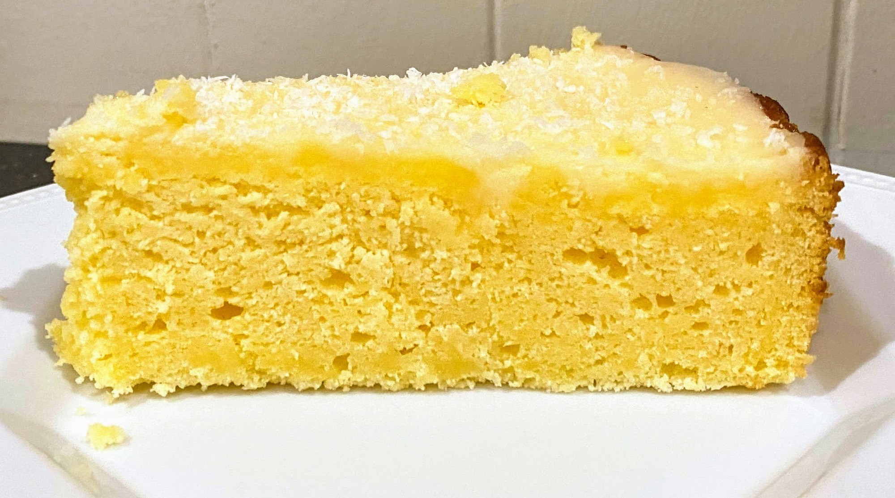

Lemon Curd Cake GF

Preheat oven to 180 degrees and grease cake tin
150gbutter3/4 cupcaster sugarsomelemon zest
Beat butter caster sugar lemon zest until light and fluffy
3eggs
Beat in eggs, one at a time
1 1 /2 cupGF SR flour2lemon juice2/3 cupsour cream
Fold in GF SR flour, lemon juice and sour cream cream
Pour into tin and bake for 50 mins